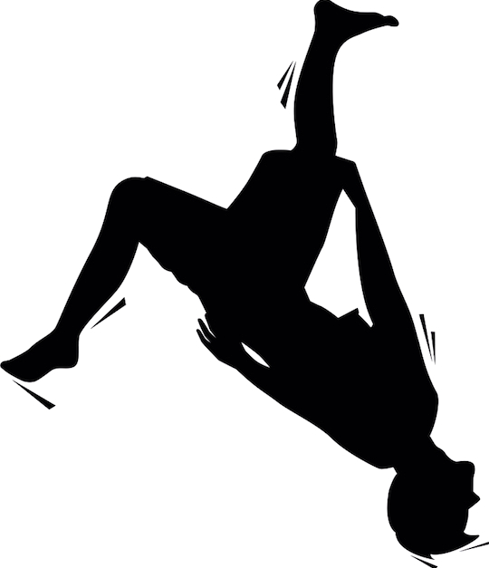

01
Tricking
Mi principal interés dentro del mundo deportivo.
Conoce el deporte que más me interesa, la actividad física que practico y algunos de mis principales referentes deportivos.
Una disciplina que destaca especialmente dentro de mis intereses deportivos.

Mi principal interés dentro del mundo deportivo.
Una representación visual de la actividad física que realizo.
Sobrecarga progresiva en gimnasio, enfocada en levantamientos compuestos.
Dos de los principales referentes que sigo dentro del mundo del tricking.